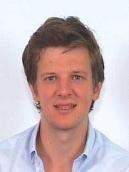
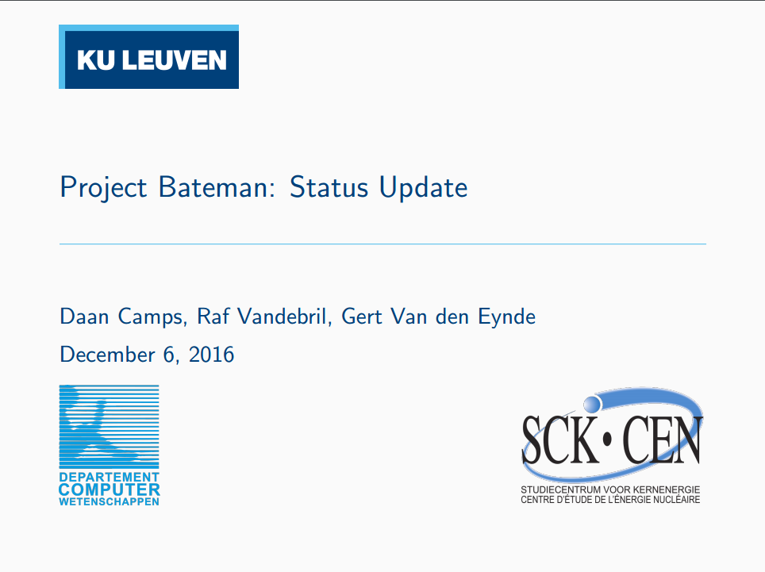
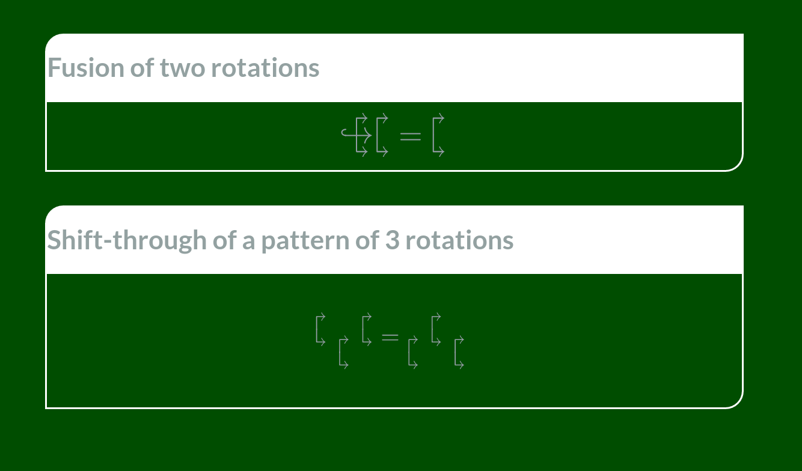

Home

Summary
I am working as a PhD researcher in the numerical analysis and applied mathematics division of the computer science department at KU Leuven. I started in September 2015 and my project is supervised by Raf Vandebril and Karl Meerbergen.
The focus of my research is on extended and rational Krylov methods, specifically on exploiting matrix structures to efficiently filter and restart a Krylov subspace iteration.
PhD
PhD
Krylov subspace methods have been widely used throughout scientific computing for a very long time. In the past few decades, generalisations such as rational and extended Krylov methods have emerged from research. These generalisations are studied further in this PhD where the main focus is on exploiting the structure present in the recurrence matrices. This structure is used to formulate an algorithm for the implicit restart of the extended Krylov iteration (article in review). This is currently further studied to define mechanisms for the restart of the rational Krylov iteration and the intermediate conversion between standard, extended and rational Krylov subspaces, related to the work from Mach et al. (2013).
The goal in the second stage of this research project is to apply this to multiple problems in scientific computing. Possible topics are in model order reduction, matrix functions and eigenvalue problems.
References
A. Ruhe. Rational Krylov: A practical algorithm for large sparse nonsymmetric matrix pencils. SIAM Journal on Scientific Computing, 19:1535-1551, 1998.
T. Mach, M. Pranic,and R, Vandebril. Computing approximate extended Krylov subspaces without explicit inversion. Electronic Transactions on Numerical Analysis, 40:414-435, 2013.
Conferences, workshops, and presentations
| |
Date |
Occasion |
Title |
Links |
 |
2017-July |
ILAS 2017 |
On the implicit restart of the rational Krylov method - Chasing algorithms for polynomial, extended and rational Krylov |
[Presentation]
[Website]
|
| |
2017-May |
1rst RENALNACA (RENcontre en Algèbre Linéaire Numérique Amiens- CAlais) |
|
[Website]
|
|  |
2016-December |
SCK•CEN |
Talk: Project Bateman: Status Update |
[Lirias]
[Presentation]
[GitHub]
|
 |
2016-July |
ILAS 2016 |
Talk: Towards a computational efficient, implicitly restarted rational Krylov method |
[Presentation]
[Website]
|
|  |
2016-June |
ADS |
9 Months talk |
[Presentation]
|
| |
2016-April |
Hausdorff school on low-rank tensors |
|
[Website]
|
TA
Teaching Assistant
I'm teaching assistant (TA) for
Résumé
Résumé
Professional experience
PhD researcher at NUMA/CS - KU Leuven
2015-Current
Digital oilfield consultant at IPCOS
2013-2015
Education
MSc in Engineering: Mathematical Engineering, KU Leuven
Thesis: Epileptic seizure monitoring using tensor decomposition techniques
2011-2013
MSc in Astronomy, KU Leuven
Thesis: Herschel/PACS observations of water in the carbon-rich AGB star V Hya
2009-2011
BSc in Physics, Hasselt University
2006-2010
Contact
Email:
eb.nevueluk.sc@spmac.naad
Tel:
+32 16 37 42 76
Address:
Departement of Computer Science
Office 02.25
KU Leuven
Celestijnenlaan 200A
3001 Heverlee - Belgium